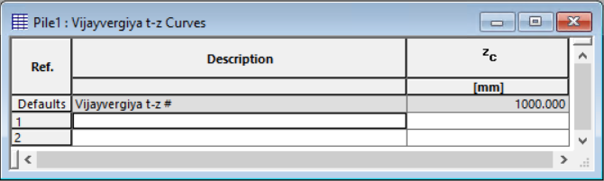
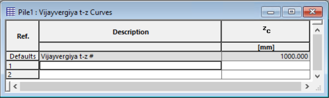
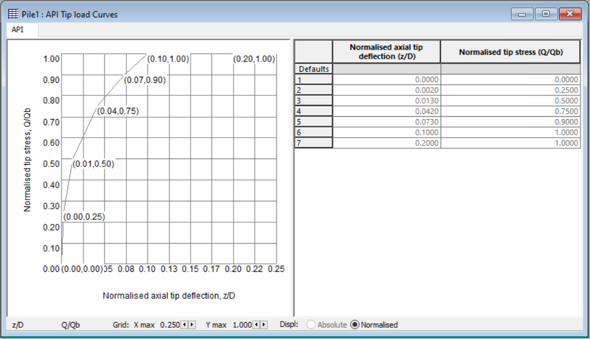
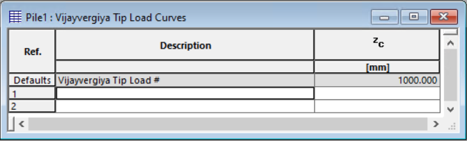
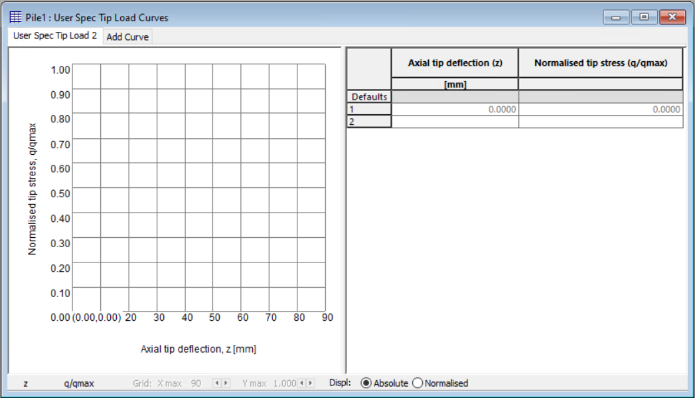
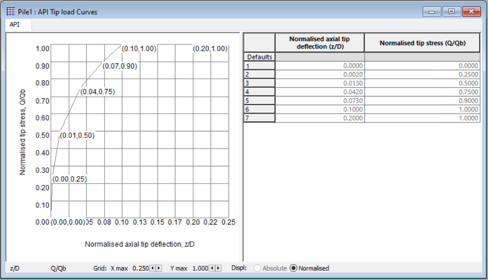
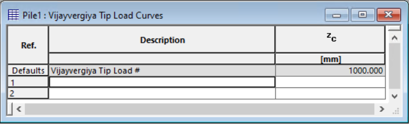
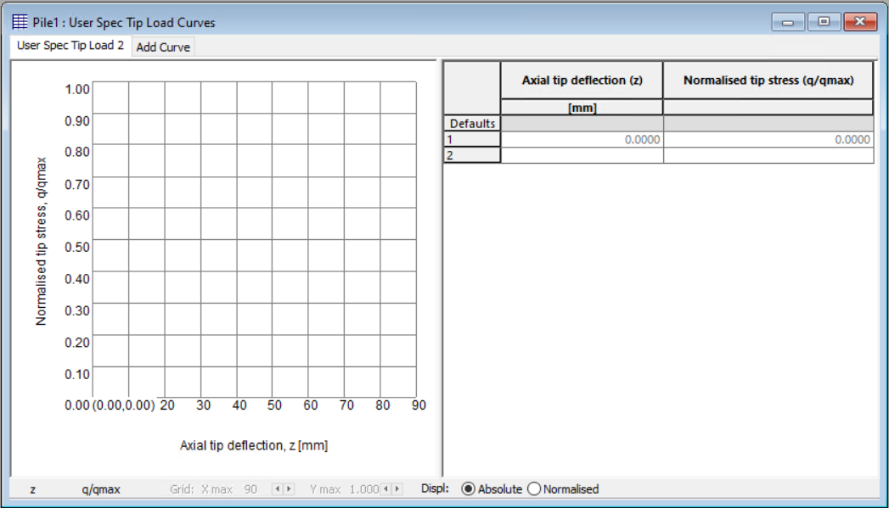

If you select the calculation method to be 't-z curves', all you have to input here is the number of pile elements and number of increments.
You still can refine the increment results print.
Please note that the 't-z' curves analysis required additional inputin 'Material Properties'. Please see what additional information is required.
 


 




